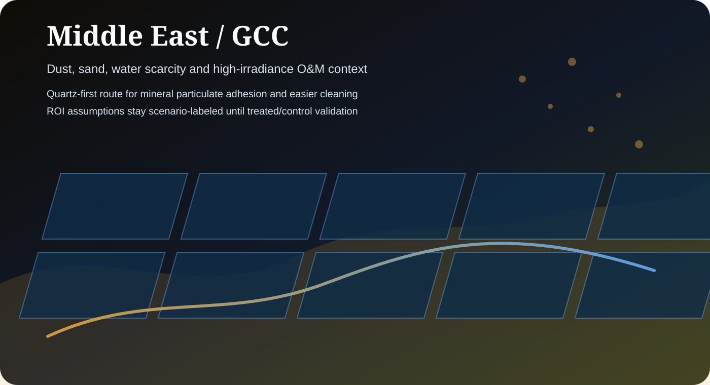

Dust and sand
Quartz is positioned for passive easy-clean behavior where mineral particulate adhesion drives cleaning burden and recovery cycles.
Middle East and GCC pages should lead with a Quartz-first route for dust, sand, cleaning burden and water logistics. Titan remains selective where UV-supported organic or atmospheric fouling is the relevant technical problem.

Quartz is positioned for passive easy-clean behavior where mineral particulate adhesion drives cleaning burden and recovery cycles.
Commercial claims should connect to local cleaning method, water cost, labor, truck-roll frequency and abrasive cleaning risk.
Middle East ROI assumptions must remain labeled as scenarios until verified by local treated/control review.
Do not present Middle East payback values as universal. Keep energy price, irradiation, coating cost, uplift assumption and cleaning-cost logic visible next to the value.
High-dust projects should be routed to a local pilot review before portfolio-level rollout or regional partner commitments.